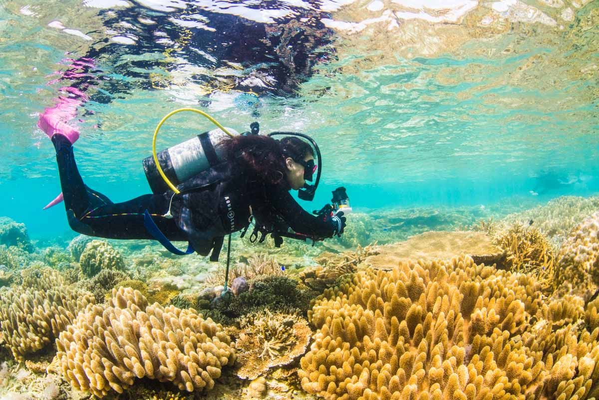
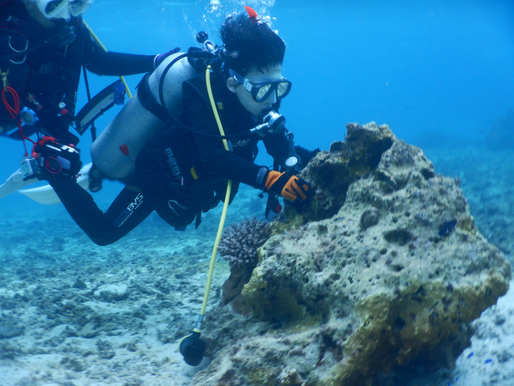
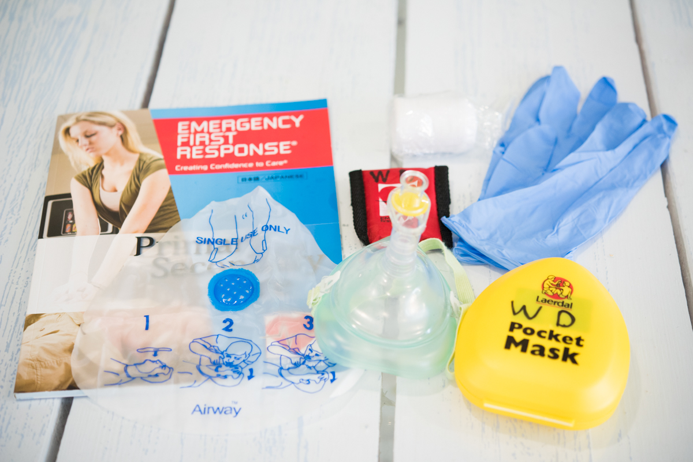
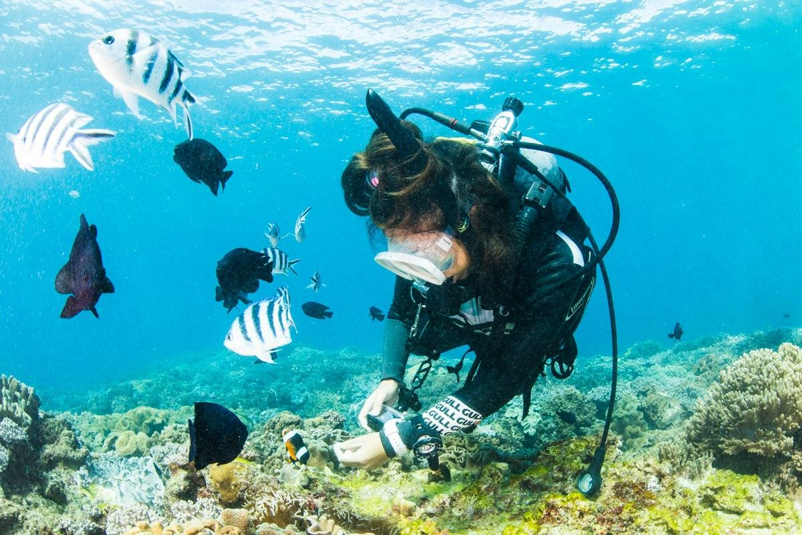

体験ダイビング
初めての方でも安心の全て一組で貸し切りのプライベートスタイル です。泳ぎに自信のない方、不安な方もお気軽にご参加ください。 初心者の方やダイビングライセンスに興味がある方におススメです。
国際ライセンス取得コース
世界共通のダイビング教育機関の「PADI®認定カード」を発行します。水面下の世界を探検するためのパスポートであり、PADI トレーニングを修了した証でもあります。
★ジュニアコース
10歳～15歳未満は「ジュニア・ダイバー」認定となります。事前にご自宅で学科のeラーニングを終了後は現地2日で取得可能。
★親子コース
親子でバディを組みコミュニケーションを取りながら潜れば、 信頼関係がより一層深まります。


★スキルアップコース
世界の海があなたを待っています。
ダイビングを楽しむために新たなダイビングスタイルを経験できるステップ
アップライセンスコースを選択してください。
★エマージェンシー・ファースト・レスポンス
(心肺蘇生法+応急手当)
心停止などい生命に関わる緊急時のケア(一次ケア)と、ケガや病気のケア (2次ケア)について学びます。最新の医学的基盤に基づいた信頼誠の高いプログラムで、様々な機関から認証されています。心停止した人の命を救う可能性が大幅に高まります。周囲の人が早期に救命処置を行うことで、救急隊到着までの生存率は約2倍、AED併用で約4倍に向上し、脳へのダメージを軽減して後遺症を減らす効果も期待できます。
ファンダイビング
ライセンス取得後はお祝いダイビングをプレゼント。
ファンダイビングのリピーター様はダイビングの全てのコース費が10%OFF!!
